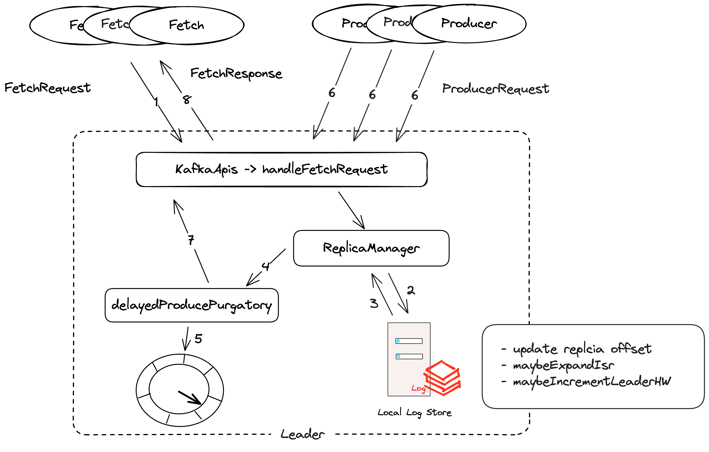

每个Broker上都有一个ReplicaManager，它管理每个Partition的数据同步逻辑，因为每个Partition都会存在副本，从而在Broker中的TopicPartition可能是Leader或者Follower。
当它是Leader时，就需要处理来自Producer的请求，写入log数据，同时等ISR集合同步完成，如果是Follower，就需要同步来自Leader的log数据，保持数据同步。
在ReplicaManager中，就会开启同步Follower线程来FetchMessage。在ReplicaManager中会调用makeFollowers来处理同步Leader数据的逻辑。
private def makeFollowers(controllerId: Int,
controllerEpoch: Int,
partitionStates: Map[Partition, LeaderAndIsrPartitionState],
correlationId: Int,
responseMap: mutable.Map[TopicPartition, Errors],
highWatermarkCheckpoints: OffsetCheckpoints,
topicIds: String => Option[Uuid]): Set[Partition] = {
val traceLoggingEnabled = stateChangeLogger.isTraceEnabled
partitionStates.forKeyValue { (partition, partitionState) =>
responseMap.put(partition.topicPartition, Errors.NONE)
}
val partitionsToMakeFollower: mutable.Set[Partition] = mutable.Set()
try {
partitionStates.forKeyValue { (partition, partitionState) =>
val newLeaderBrokerId = partitionState.leader
try {
if (metadataCache.hasAliveBroker(newLeaderBrokerId)) {
// Only change partition state when the leader is available
if (partition.makeFollower(partitionState, highWatermarkCheckpoints, topicIds(partitionState.topicName))) {
partitionsToMakeFollower += partition
}
} else {
// The leader broker should always be present in the metadata cache.
// If not, we should record the error message and abort the transition process for this partition
stateChangeLogger.error(s"Received LeaderAndIsrRequest with correlation id $correlationId from " +
s"controller $controllerId epoch $controllerEpoch for partition ${partition.topicPartition} " +
s"(last update controller epoch ${partitionState.controllerEpoch}) " +
s"but cannot become follower since the new leader $newLeaderBrokerId is unavailable.")
// Create the local replica even if the leader is unavailable. This is required to ensure that we include
// the partition's high watermark in the checkpoint file (see KAFKA-1647)
partition.createLogIfNotExists(isNew = partitionState.isNew, isFutureReplica = false,
highWatermarkCheckpoints, topicIds(partitionState.topicName))
}
} catch {
case e: KafkaStorageException =>
stateChangeLogger.error(s"Skipped the become-follower state change with correlation id $correlationId from " +
s"controller $controllerId epoch $controllerEpoch for partition ${partition.topicPartition} " +
s"(last update controller epoch ${partitionState.controllerEpoch}) with leader " +
s"$newLeaderBrokerId since the replica for the partition is offline due to storage error $e")
// If there is an offline log directory, a Partition object may have been created and have been added
// to `ReplicaManager.allPartitions` before `createLogIfNotExists()` failed to create local replica due
// to KafkaStorageException. In this case `ReplicaManager.allPartitions` will map this topic-partition
// to an empty Partition object. We need to map this topic-partition to OfflinePartition instead.
markPartitionOffline(partition.topicPartition)
responseMap.put(partition.topicPartition, Errors.KAFKA_STORAGE_ERROR)
}
}
// Stopping the fetchers must be done first in order to initialize the fetch
// position correctly.
replicaFetcherManager.removeFetcherForPartitions(partitionsToMakeFollower.map(_.topicPartition))
stateChangeLogger.info(s"Stopped fetchers as part of become-follower request from controller $controllerId " +
s"epoch $controllerEpoch with correlation id $correlationId for ${partitionsToMakeFollower.size} partitions")
partitionsToMakeFollower.foreach { partition =>
completeDelayedFetchOrProduceRequests(partition.topicPartition)
}
if (isShuttingDown.get()) {
...
} else {
// we do not need to check if the leader exists again since this has been done at the beginning of this process
val partitionsToMakeFollowerWithLeaderAndOffset = partitionsToMakeFollower.map { partition =>
val leaderNode = partition.leaderReplicaIdOpt.flatMap(leaderId => metadataCache.
getAliveBrokerNode(leaderId, config.interBrokerListenerName)).getOrElse(Node.noNode())
val leader = new BrokerEndPoint(leaderNode.id(), leaderNode.host(), leaderNode.port())
val log = partition.localLogOrException
val fetchOffset = initialFetchOffset(log)
partition.topicPartition -> InitialFetchState(topicIds(partition.topic), leader, partition.getLeaderEpoch, fetchOffset)
}.toMap
replicaFetcherManager.addFetcherForPartitions(partitionsToMakeFollowerWithLeaderAndOffset)
}
} catch {
case e: Throwable =>
stateChangeLogger.error(s"Error while processing LeaderAndIsr request with correlationId $correlationId " +
s"received from controller $controllerId epoch $controllerEpoch", e)
// Re-throw the exception for it to be caught in KafkaApis
throw e
}
partitionsToMakeFollower
}
源码注释了什么情况下会将partition变成Follower,makeFollowers这个方法会在handleLeaderAndIsrRequest中被调用
/*
* Make the current broker to become follower for a given set of partitions by:
*
* 1. Remove these partitions from the leader partitions set.
* 2. Mark the replicas as followers so that no more data can be added from the producer clients.
* 3. Stop fetchers for these partitions so that no more data can be added by the replica fetcher threads.
* 4. Truncate the log and checkpoint offsets for these partitions.
* 5. Clear the produce and fetch requests in the purgatory
* 6. If the broker is not shutting down, add the fetcher to the new leaders.
*
* The ordering of doing these steps make sure that the replicas in transition will not
* take any more messages before checkpointing offsets so that all messages before the checkpoint
* are guaranteed to be flushed to disks
*
* If an unexpected error is thrown in this function, it will be propagated to KafkaApis where
* the error message will be set on each partition since we do not know which partition caused it. Otherwise,
* return the set of partitions that are made follower due to this method
*/
makeFollowers主要的steps：
-
partitionsToMakeFollower 里面包含的是Leader发生改变的partition
-
接下来removeFetcherForPartitions会从fetcher线程中移除对partition的同步，为了保证从新Leader中从正确的位置开始同步
-
completeDelayedFetchOrProduceRequests，完成那些之前异步的Fetch操作
-
之后会将同步的信息包装成Map[TopicPartition, InitialFetchState]，里面包含的信息如下代码，之后将此信息放进Fetcher线程中进行同步
val partitionsToMakeFollowerWithLeaderAndOffset = partitionsToMakeFollower.map { partition =>
val leaderNode = partition.leaderReplicaIdOpt.flatMap(leaderId => metadataCache.
getAliveBrokerNode(leaderId, config.interBrokerListenerName)).getOrElse(Node.noNode())
val leader = new BrokerEndPoint(leaderNode.id(), leaderNode.host(), leaderNode.port())
val log = partition.localLogOrException
val fetchOffset = initialFetchOffset(log)
partition.topicPartition -> InitialFetchState(topicIds(partition.topic), leader, partition.getLeaderEpoch, fetchOffset)
}.toMap
Fetch 线程同步
replica线程在启动后，就会进行同步操作，ReplicaFetcherThread会调用doWork()：
override def doWork(): Unit = {
maybeTruncate()
maybeFetch()
completeDelayedFetchRequests()
}
1. maybeTruncate()
maybeTruncate会将Leader Offset改变的follower进行高水位或者LeaderEpoch进行重新平衡，先不深入LeaderEpoch
private def maybeTruncate(): Unit = {
val (partitionsWithEpochs, partitionsWithoutEpochs) =
fetchTruncatingPartitions()
if (partitionsWithEpochs.nonEmpty) {
truncateToEpochEndOffsets(partitionsWithEpochs)
}
if (partitionsWithoutEpochs.nonEmpty) {
truncateToHighWatermark(partitionsWithoutEpochs)
}
}
private[server] def truncateToHighWatermark(partitions: Set[TopicPartition]): Unit = inLock(partitionMapLock) {
val fetchOffsets = mutable.HashMap.empty[TopicPartition, OffsetTruncationState]
for (tp <- partitions) {
val partitionState = partitionStates.stateValue(tp)
if (partitionState != null) {
val highWatermark = partitionState.fetchOffset
val truncationState = OffsetTruncationState(highWatermark, truncationCompleted = true)
info(s"Truncating partition $tp with $truncationState due to local high watermark $highWatermark")
if (doTruncate(tp, truncationState))
fetchOffsets.put(tp, truncationState)
}
}
updateFetchOffsetAndMaybeMarkTruncationComplete(fetchOffsets)
}
truncateToHighWatermark会将partitionsWithoutEpochs中所有处isTruncating状态的local partition's offset更新成新Leader Partition高水位的offset,因为有些处于Truncating的partition可能Log end offset已经大于新Leader的高水位，此时进行截断，从新Leader的高水位开始进行同步
2. maybeFetch
private def maybeFetch(): Unit = {
val fetchRequestOpt = inLock(partitionMapLock) {
val ResultWithPartitions(fetchRequestOpt, partitionsWithError) = leader.buildFetch(partitionStates.partitionStateMap.asScala)
handlePartitionsWithErrors(partitionsWithError, "maybeFetch")
if (fetchRequestOpt.isEmpty) {
trace(s"There are no active partitions. Back off for $fetchBackOffMs ms before sending a fetch request")
partitionMapCond.await(fetchBackOffMs, TimeUnit.MILLISECONDS)
}
fetchRequestOpt
}
fetchRequestOpt.foreach { case ReplicaFetch(sessionPartitions, fetchRequest) =>
processFetchRequest(sessionPartitions, fetchRequest)
}
}
maybeFetch主要是组装fetchRequest:
new FetchRequest.PartitionData(
fetchState.topicId.getOrElse(Uuid.ZERO_UUID),
fetchState.fetchOffset, //logAppendInfo.lastOffset + 1
logStartOffset,
fetchSize,
Optional.of(fetchState.currentLeaderEpoch),
lastFetchedEpoch)
然后发送请求到Leader所在的Broker，之后进行follower副本offset的更新。processFetchRequest中将fetchRequest放入sender线程中进行请求
private def processFetchRequest(sessionPartitions: util.Map[TopicPartition, FetchRequest.PartitionData],
fetchRequest: FetchRequest.Builder): Unit = {
val partitionsWithError = mutable.Set[TopicPartition]()
val divergingEndOffsets = mutable.Map.empty[TopicPartition, EpochEndOffset]
var responseData: Map[TopicPartition, FetchData] = Map.empty
try {
trace(s"Sending fetch request $fetchRequest")
responseData = leader.fetch(fetchRequest)
} catch {
...
}
fetcherStats.requestRate.mark()
if (responseData.nonEmpty) {
// process fetched data
inLock(partitionMapLock) {
responseData.forKeyValue { (topicPartition, partitionData) =>
Option(partitionStates.stateValue(topicPartition)).foreach { currentFetchState =>
// It's possible that a partition is removed and re-added or truncated when there is a pending fetch request.
// In this case, we only want to process the fetch response if the partition state is ready for fetch and
// the current offset is the same as the offset requested.
val fetchPartitionData = sessionPartitions.get(topicPartition)
if (fetchPartitionData != null && fetchPartitionData.fetchOffset == currentFetchState.fetchOffset && currentFetchState.isReadyForFetch) {
Errors.forCode(partitionData.errorCode) match {
case Errors.NONE =>
try {
if (leader.isTruncationOnFetchSupported && FetchResponse.isDivergingEpoch(partitionData)) {
...
} else {
// Once we hand off the partition data to the subclass, we can't mess with it any more in this thread
val logAppendInfoOpt = processPartitionData(
topicPartition,
currentFetchState.fetchOffset,
partitionData
)
logAppendInfoOpt.foreach { logAppendInfo =>
val validBytes = logAppendInfo.validBytes
val nextOffset = if (validBytes > 0) logAppendInfo.lastOffset + 1 else currentFetchState.fetchOffset
val lag = Math.max(0L, partitionData.highWatermark - nextOffset)
fetcherLagStats.getAndMaybePut(topicPartition).lag = lag
// ReplicaDirAlterThread may have removed topicPartition from the partitionStates after processing the partition data
if ((validBytes > 0 || currentFetchState.lag.isEmpty) && partitionStates.contains(topicPartition)) {
// Update partitionStates only if there is no exception during processPartitionData
val newFetchState = PartitionFetchState(currentFetchState.topicId, nextOffset, Some(lag),
currentFetchState.currentLeaderEpoch, state = Fetching,
logAppendInfo.lastLeaderEpoch.asScala)
partitionStates.updateAndMoveToEnd(topicPartition, newFetchState)
if (validBytes > 0) fetcherStats.byteRate.mark(validBytes)
}
}
}
}
}
...
}
当response返回了数据，调用processPartitionData更新follower的log end offset,其中processPartitionData会进行partition.append操作;当写完本地log后，更新partitionState.updateAndMoveToEnd，
override def processPartitionData(topicPartition: TopicPartition,
fetchOffset: Long,
partitionData: FetchData): Option[LogAppendInfo] = {
val logTrace = isTraceEnabled
val partition = replicaMgr.getPartitionOrException(topicPartition)
val log = partition.localLogOrException
val records = toMemoryRecords(FetchResponse.recordsOrFail(partitionData))
maybeWarnIfOversizedRecords(records, topicPartition)
if (fetchOffset != log.logEndOffset)
throw new IllegalStateException("Offset mismatch for partition %s: fetched offset = %d, log end offset = %d.".format(
topicPartition, fetchOffset, log.logEndOffset))
if (logTrace)
trace("Follower has replica log end offset %d for partition %s. Received %d bytes of messages and leader hw %d"
.format(log.logEndOffset, topicPartition, records.sizeInBytes, partitionData.highWatermark))
// Append the leader's messages to the log
val logAppendInfo = partition.appendRecordsToFollowerOrFutureReplica(records, isFuture = false)
if (logTrace)
trace("Follower has replica log end offset %d after appending %d bytes of messages for partition %s"
.format(log.logEndOffset, records.sizeInBytes, topicPartition))
val leaderLogStartOffset = partitionData.logStartOffset
// For the follower replica, we do not need to keep its segment base offset and physical position.
// These values will be computed upon becoming leader or handling a preferred read replica fetch.
var maybeUpdateHighWatermarkMessage = s"but did not update replica high watermark"
log.maybeUpdateHighWatermark(partitionData.highWatermark).foreach { newHighWatermark =>
maybeUpdateHighWatermarkMessage = s"and updated replica high watermark to $newHighWatermark"
partitionsWithNewHighWatermark += topicPartition
}
log.maybeIncrementLogStartOffset(leaderLogStartOffset, LogStartOffsetIncrementReason.LeaderOffsetIncremented)
if (logTrace)
trace(s"Follower received high watermark ${partitionData.highWatermark} from the leader " +
s"$maybeUpdateHighWatermarkMessage for partition $topicPartition")
// Traffic from both in-sync and out of sync replicas are accounted for in replication quota to ensure total replication
// traffic doesn't exceed quota.
if (quota.isThrottled(topicPartition))
quota.record(records.sizeInBytes)
if (partition.isReassigning && partition.isAddingLocalReplica)
brokerTopicStats.updateReassignmentBytesIn(records.sizeInBytes)
brokerTopicStats.updateReplicationBytesIn(records.sizeInBytes)
logAppendInfo
}
- maybeUpdateHighWatermark
- 如果leader的partition高水位发生改变，就更新follower的高水位
- maybeIncrementLogStartOffset
- 如果leader的logStartOffset更新了，也需要更新本地副本的logStartOffset。
3. completeDelayedFetchRequests
private def completeDelayedFetchRequests(): Unit = {
if (partitionsWithNewHighWatermark.nonEmpty) {
replicaMgr.completeDelayedFetchRequests(
partitionsWithNewHighWatermark.toSeq)
partitionsWithNewHighWatermark.clear()
}
}
private[server] def completeDelayedFetchRequests(topicPartitions: Seq[TopicPartition]): Unit = {
topicPartitions.foreach(tp => delayedFetchPurgatory.checkAndComplete(TopicPartitionOperationKey(tp)))
}
刚开始还有个疑问，为什么follower中还有completeDelayedFetchRequests操作，刚看了KIP-392,其中描述了避免跨机房从Leader中获取消息外，Kafka支持从就近的Replica中获取消息，从而就会存在consumer fetch request from follower，于是就会存在delayedFetch操作，从而当follower的高水位更新后，避免因replica.fetch.wait.max.ms超时才响应，而是在更新高水位后就立即尝试响应
-
HandleFetchRequest
当Broker server收到fetchRequest后，KafkaApis会将其mapping到handleFetchRequest的方法中来处理，下面来详细介绍其处理方式：
def handleFetchRequest(request: RequestChannel.Request): Unit = {
val versionId = request.header.apiVersion
val clientId = request.header.clientId
val fetchRequest = request.body[FetchRequest]
val topicNames =
if (fetchRequest.version() >= 13)
metadataCache.topicIdsToNames()
else
Collections.emptyMap[Uuid, String]()
val fetchData = fetchRequest.fetchData(topicNames)
val forgottenTopics = fetchRequest.forgottenTopics(topicNames)
val fetchContext = fetchManager.newContext(
fetchRequest.version,
fetchRequest.metadata,
fetchRequest.isFromFollower,
fetchData,
forgottenTopics,
topicNames)
val erroneous = mutable.ArrayBuffer[(TopicIdPartition, FetchResponseData.PartitionData)]()
val interesting = mutable.ArrayBuffer[(TopicIdPartition, FetchRequest.PartitionData)]()
if (fetchRequest.isFromFollower) {
// The follower must have ClusterAction on ClusterResource in order to fetch partition data.
if (authHelper.authorize(request.context, CLUSTER_ACTION, CLUSTER, CLUSTER_NAME)) {
fetchContext.foreachPartition { (topicIdPartition, data) =>
interesting += topicIdPartition -> data
}
}
...
} else {
...
}
// the callback for process a fetch response, invoked before throttling
def processResponseCallback(responsePartitionData: Seq[(TopicIdPartition, FetchPartitionData)]): Unit = {
val partitions = new util.LinkedHashMap[TopicIdPartition, FetchResponseData.PartitionData]
val reassigningPartitions = mutable.Set[TopicIdPartition]()
responsePartitionData.foreach { case (tp, data) =>
val abortedTransactions = data.abortedTransactions.orElse(null)
val lastStableOffset: Long = data.lastStableOffset.orElse(FetchResponse.INVALID_LAST_STABLE_OFFSET)
if (data.isReassignmentFetch) reassigningPartitions.add(tp)
val partitionData = new FetchResponseData.PartitionData()
.setPartitionIndex(tp.partition)
.setErrorCode(maybeDownConvertStorageError(data.error).code)
.setHighWatermark(data.highWatermark)
.setLastStableOffset(lastStableOffset)
.setLogStartOffset(data.logStartOffset)
.setAbortedTransactions(abortedTransactions)
.setRecords(data.records)
.setPreferredReadReplica(data.preferredReadReplica.orElse(FetchResponse.INVALID_PREFERRED_REPLICA_ID))
data.divergingEpoch.ifPresent(partitionData.setDivergingEpoch(_))
partitions.put(tp, partitionData)
}
erroneous.foreach { case (tp, data) => partitions.put(tp, data) }
// Prepare fetch response from converted data
val response =
FetchResponse.of(unconvertedFetchResponse.error, throttleTimeMs, unconvertedFetchResponse.sessionId, convertedData)
// record the bytes out metrics only when the response is being sent
response.data.responses.forEach { topicResponse =>
topicResponse.partitions.forEach { data =>
// If the topic name was not known, we will have no bytes out.
if (topicResponse.topic != null) {
val tp = new TopicIdPartition(topicResponse.topicId, new TopicPartition(topicResponse.topic, data.partitionIndex))
brokerTopicStats.updateBytesOut(tp.topic, fetchRequest.isFromFollower, reassigningPartitions.contains(tp), FetchResponse.recordsSize(data))
}
}
}
response
}
if (fetchRequest.isFromFollower) {
// We've already evaluated against the quota and are good to go. Just need to record it now.
unconvertedFetchResponse = fetchContext.updateAndGenerateResponseData(partitions)
val responseSize = KafkaApis.sizeOfThrottledPartitions(versionId, unconvertedFetchResponse, quotas.leader)
quotas.leader.record(responseSize)
val responsePartitionsSize = unconvertedFetchResponse.data().responses().stream().mapToInt(_.partitions().size()).sum()
trace(s"Sending Fetch response with partitions.size=$responsePartitionsSize, " +
s"metadata=${unconvertedFetchResponse.sessionId}")
requestHelper.sendResponseExemptThrottle(request, createResponse(0), Some(updateConversionStats))
} else {
...
}
}
if (interesting.isEmpty) {
processResponseCallback(Seq.empty)
} else {
// for fetch from consumer, cap fetchMaxBytes to the maximum bytes that could be fetched without being throttled given
// no bytes were recorded in the recent quota window
// trying to fetch more bytes would result in a guaranteed throttling potentially blocking consumer progress
val maxQuotaWindowBytes = if (fetchRequest.isFromFollower)
Int.MaxValue
else
quotas.fetch.getMaxValueInQuotaWindow(request.session, clientId).toInt
val fetchMaxBytes = Math.min(Math.min(fetchRequest.maxBytes, config.fetchMaxBytes), maxQuotaWindowBytes)
val fetchMinBytes = Math.min(fetchRequest.minBytes, fetchMaxBytes)
val clientMetadata: Optional[ClientMetadata] = if (versionId >= 11) {
// Fetch API version 11 added preferred replica logic
Optional.of(new DefaultClientMetadata(
fetchRequest.rackId,
clientId,
request.context.clientAddress,
request.context.principal,
request.context.listenerName.value))
} else {
Optional.empty()
}
val params = new FetchParams(
versionId,
fetchRequest.replicaId,
fetchRequest.replicaEpoch,
fetchRequest.maxWait,
fetchMinBytes,
fetchMaxBytes,
FetchIsolation.of(fetchRequest),
clientMetadata
)
// call the replica manager to fetch messages from the local replica
replicaManager.fetchMessages(
params = params,
fetchInfos = interesting,
quota = replicationQuota(fetchRequest),
responseCallback = processResponseCallback,
)
}
}
其主要就是调用replicaManager.fetchMessages：
- ReplicaManager 处理 Fetch 请求看起来比较清晰，先是readFromLog，将topicIdPartition请求的logReadResult读取出来
def readFromLog(
params: FetchParams,
readPartitionInfo: Seq[(TopicIdPartition, PartitionData)],
quota: ReplicaQuota,
readFromPurgatory: Boolean): Seq[(TopicIdPartition, LogReadResult)] = {
val traceEnabled = isTraceEnabled
...
var limitBytes = params.maxBytes
val result = new mutable.ArrayBuffer[(TopicIdPartition, LogReadResult)]
var minOneMessage = !params.hardMaxBytesLimit
readPartitionInfo.foreach { case (tp, fetchInfo) =>
val readResult = read(tp, fetchInfo, limitBytes, minOneMessage)
val recordBatchSize = readResult.info.records.sizeInBytes
// Once we read from a non-empty partition, we stop ignoring request and partition level size limits
if (recordBatchSize > 0)
minOneMessage = false
limitBytes = math.max(0, limitBytes - recordBatchSize)
result += (tp -> readResult)
}
result
}
核心是在read里面,先是getPartition，然后根据fetchInfo从相应的partition中fetchRecords
def read(tp: TopicIdPartition, fetchInfo: PartitionData, limitBytes: Int, minOneMessage: Boolean): LogReadResult = {
val offset = fetchInfo.fetchOffset
val partitionFetchSize = fetchInfo.maxBytes
val followerLogStartOffset = fetchInfo.logStartOffset
val adjustedMaxBytes = math.min(fetchInfo.maxBytes, limitBytes)
var log: UnifiedLog = null
var partition: Partition = null
val fetchTimeMs = time.milliseconds
try {
partition = getPartitionOrException(tp.topicPartition)
// Check if topic ID from the fetch request/session matches the ID in the log
val topicId = if (tp.topicId == Uuid.ZERO_UUID) None else Some(tp.topicId)
if (!hasConsistentTopicId(topicId, partition.topicId))
throw new InconsistentTopicIdException("Topic ID in the fetch session did not match the topic ID in the log.")
log = partition.localLogWithEpochOrThrow(
fetchInfo.currentLeaderEpoch, params.fetchOnlyLeader())
// Try the read first, this tells us whether we need all of adjustedFetchSize for this partition
val readInfo: LogReadInfo = partition.fetchRecords(
fetchParams = params,
fetchPartitionData = fetchInfo,
fetchTimeMs = fetchTimeMs,
maxBytes = adjustedMaxBytes,
minOneMessage = minOneMessage,
updateFetchState = !readFromPurgatory)
val fetchDataInfo = checkFetchDataInfo(partition, readInfo.fetchedData)
LogReadResult(info = fetchDataInfo,
divergingEpoch = readInfo.divergingEpoch.asScala,
highWatermark = readInfo.highWatermark,
leaderLogStartOffset = readInfo.logStartOffset,
leaderLogEndOffset = readInfo.logEndOffset,
followerLogStartOffset = followerLogStartOffset,
fetchTimeMs = fetchTimeMs,
lastStableOffset = Some(readInfo.lastStableOffset),
preferredReadReplica = preferredReadReplica,
exception = None
)
}
}
fetchRecords会先readFromLocalLog,然后执行updateFollowerFetchState
def fetchRecords(
fetchParams: FetchParams,
fetchPartitionData: FetchRequest.PartitionData,
fetchTimeMs: Long,
maxBytes: Int,
minOneMessage: Boolean,
updateFetchState: Boolean
): LogReadInfo = {
def readFromLocalLog(log: UnifiedLog): LogReadInfo = {
readRecords(
log,
fetchPartitionData.lastFetchedEpoch,
fetchPartitionData.fetchOffset,
fetchPartitionData.currentLeaderEpoch,
maxBytes,
fetchParams.isolation,
minOneMessage
)
}
if (fetchParams.isFromFollower) {
// Check that the request is from a valid replica before doing the read
val (replica, logReadInfo) = inReadLock(leaderIsrUpdateLock) {
val localLog = localLogWithEpochOrThrow(
fetchPartitionData.currentLeaderEpoch,
fetchParams.fetchOnlyLeader
)
val replica = followerReplicaOrThrow(
fetchParams.replicaId,
fetchPartitionData
)
val logReadInfo = readFromLocalLog(localLog)
(replica, logReadInfo)
}
if (updateFetchState && !logReadInfo.divergingEpoch.isPresent) {
updateFollowerFetchState(
replica,
followerFetchOffsetMetadata = logReadInfo.fetchedData.fetchOffsetMetadata,
followerStartOffset = fetchPartitionData.logStartOffset,
followerFetchTimeMs = fetchTimeMs,
leaderEndOffset = logReadInfo.logEndOffset,
fetchParams.replicaEpoch
)
}
logReadInfo
}
readFromLocalLog先不介绍日志层，我们看获取到logReadInfo以后，执行了哪些更新操作
updateFollowerFetchState(
replica, // 根据replicaId和fetchData获取相应的remoteReplica
followerFetchOffsetMetadata =
logReadInfo.fetchedData.fetchOffsetMetadata,
followerStartOffset = fetchPartitionData.logStartOffset,
followerFetchTimeMs = fetchTimeMs,
leaderEndOffset = logReadInfo.logEndOffset,
fetchParams.replicaEpoch
)
def updateFollowerFetchState(
replica: Replica,
followerFetchOffsetMetadata: LogOffsetMetadata,
followerStartOffset: Long,
followerFetchTimeMs: Long,
leaderEndOffset: Long,
brokerEpoch: Long
): Unit = {
// No need to calculate low watermark if there is no delayed DeleteRecordsRequest
val oldLeaderLW = if (delayedOperations.numDelayedDelete > 0) lowWatermarkIfLeader else -1L
val prevFollowerEndOffset = replica.stateSnapshot.logEndOffset
replica.updateFetchState(
followerFetchOffsetMetadata,
followerStartOffset,
followerFetchTimeMs,
leaderEndOffset,
brokerEpoch
)
val newLeaderLW = if (delayedOperations.numDelayedDelete > 0) lowWatermarkIfLeader else -1L
// check if the LW of the partition has incremented
// since the replica's logStartOffset may have incremented
val leaderLWIncremented = newLeaderLW > oldLeaderLW
// Check if this in-sync replica needs to be added to the ISR.
maybeExpandIsr(replica)
// check if the HW of the partition can now be incremented
// since the replica may already be in the ISR and its LEO has just incremented
val leaderHWIncremented = if (prevFollowerEndOffset != replica.stateSnapshot.logEndOffset) {
// the leader log may be updated by ReplicaAlterLogDirsThread so the following method must be in lock of
// leaderIsrUpdateLock to prevent adding new hw to invalid log.
inReadLock(leaderIsrUpdateLock) {
leaderLogIfLocal.exists(leaderLog => maybeIncrementLeaderHW(leaderLog, followerFetchTimeMs))
}
} else {
false
}
// some delayed operations may be unblocked after HW or LW changed
if (leaderLWIncremented || leaderHWIncremented)
tryCompleteDelayedRequests()
debug(s"Recorded replica ${replica.brokerId} log end offset (LEO) position " +
s"${followerFetchOffsetMetadata.messageOffset} and log start offset $followerStartOffset.")
}
- replica执行updateFetchState，更新follower Replica的offset信息
- maybeExpandIsr判断如果replica的offset已经追赶上leader的endOffset，就提示可能要更新Isr集合
注释解释了当 LEO >= HW && followerEndOffset >= leaderEpochStartOffsetOpt ,就可以加入ISR
/**
* Check and maybe expand the ISR of the partition.
* A replica will be added to ISR if its LEO >= current hw of the partition and it is caught up to
* an offset within the current leader epoch. A replica must be caught up to the current leader
* epoch before it can join ISR, because otherwise, if there is committed data between current
* leader's HW and LEO, the replica may become the leader before it fetches the committed data
* and the data will be lost.
*
* Technically, a replica shouldn't be in ISR if it hasn't caught up for longer than replicaLagTimeMaxMs,
* even if its log end offset is >= HW. However, to be consistent with how the follower determines
* whether a replica is in-sync, we only check HW.
*
* This function can be triggered when a replica's LEO has incremented.
*/
private def maybeExpandIsr(followerReplica: Replica): Unit = {
val needsIsrUpdate = !partitionState.isInflight && canAddReplicaToIsr(followerReplica.brokerId) && inReadLock(leaderIsrUpdateLock) {
needsExpandIsr(followerReplica)
}
if (needsIsrUpdate) {
val alterIsrUpdateOpt = inWriteLock(leaderIsrUpdateLock) {
// check if this replica needs to be added to the ISR
partitionState match {
case currentState: CommittedPartitionState if needsExpandIsr(followerReplica) =>
Some(prepareIsrExpand(currentState, followerReplica.brokerId))
case _ =>
None
}
}
// Send the AlterPartition request outside of the LeaderAndIsr lock since the completion logic
// may increment the high watermark (and consequently complete delayed operations).
alterIsrUpdateOpt.foreach(submitAlterPartition)
}
}
private def needsExpandIsr(followerReplica: Replica): Boolean = {
canAddReplicaToIsr(followerReplica.brokerId) && isFollowerInSync(followerReplica)
}
private def canAddReplicaToIsr(followerReplicaId: Int): Boolean = {
val current = partitionState
!current.isInflight &&
!current.isr.contains(followerReplicaId) &&
isReplicaIsrEligible(followerReplicaId)
}
private def isFollowerInSync(followerReplica: Replica): Boolean = {
leaderLogIfLocal.exists { leaderLog =>
val followerEndOffset = followerReplica.stateSnapshot.logEndOffset
followerEndOffset >= leaderLog.highWatermark && leaderEpochStartOffsetOpt.exists(followerEndOffset >= _)
}
}
- maybeIncrementLeaderHW会判断所有的replica的最小logEndOffset值，或者Isr集合有变化时，来判断是是否更新高水位
/**
* Check and maybe increment the high watermark of the partition;
* this function can be triggered when
*
* 1. Partition ISR changed
* 2. Any replica's LEO changed
*
* The HW is determined by the smallest log end offset among all replicas that are in sync; or are considered caught-up
* and are allowed to join the ISR. This way, if a replica is considered caught-up, but its log end offset is smaller
* than HW, we will wait for this replica to catch up to the HW before advancing the HW. This helps the situation when
* the ISR only includes the leader replica and a follower tries to catch up. If we don't wait for the follower when
* advancing the HW, the follower's log end offset may keep falling behind the HW (determined by the leader's log end
* offset) and therefore will never be added to ISR.
*
* With the addition of AlterPartition, we also consider newly added replicas as part of the ISR when advancing
* the HW. These replicas have not yet been committed to the ISR by the controller, so we could revert to the previously
* committed ISR. However, adding additional replicas to the ISR makes it more restrictive and therefore safe. We call
* this set the "maximal" ISR. See KIP-497 for more details
*
* Note There is no need to acquire the leaderIsrUpdate lock here since all callers of this private API acquire that lock
*
* @return true if the HW was incremented, and false otherwise.
*/
private def maybeIncrementLeaderHW(leaderLog: UnifiedLog, currentTimeMs: Long = time.milliseconds): Boolean = {
// maybeIncrementLeaderHW is in the hot path, the following code is written to
// avoid unnecessary collection generation
val leaderLogEndOffset = leaderLog.logEndOffsetMetadata
var newHighWatermark = leaderLogEndOffset
remoteReplicasMap.values.foreach { replica =>
val replicaState = replica.stateSnapshot
def shouldWaitForReplicaToJoinIsr: Boolean = {
replicaState.isCaughtUp(leaderLogEndOffset.messageOffset, currentTimeMs, replicaLagTimeMaxMs) &&
isReplicaIsrEligible(replica.brokerId)
}
// Note here we are using the "maximal", see explanation above
if (replicaState.logEndOffsetMetadata.messageOffset < newHighWatermark.messageOffset &&
(partitionState.maximalIsr.contains(replica.brokerId) || shouldWaitForReplicaToJoinIsr)
) {
newHighWatermark = replicaState.logEndOffsetMetadata
}
}
leaderLog.maybeIncrementHighWatermark(newHighWatermark) match {
case Some(oldHighWatermark) =>
debug(s"High watermark updated from $oldHighWatermark to $newHighWatermark")
true
case None =>
def logEndOffsetString: ((Int, LogOffsetMetadata)) => String = {
case (brokerId, logEndOffsetMetadata) => s"replica $brokerId: $logEndOffsetMetadata"
}
false
}
}
// 调用maybeIncrementLeaderHW之前，会update caughtUpTime
val lastCaughtUpTime = if (followerFetchOffsetMetadata.messageOffset >= leaderEndOffset) {
math.max(currentReplicaState.lastCaughtUpTimeMs, followerFetchTimeMs)
} else if (followerFetchOffsetMetadata.messageOffset >= currentReplicaState.lastFetchLeaderLogEndOffset) {
math.max(currentReplicaState.lastCaughtUpTimeMs, currentReplicaState.lastFetchTimeMs)
} else {
currentReplicaState.lastCaughtUpTimeMs
}
- 如果leader的低水位(所有replica的最小startLogOffset)或者高水位有变化，就tryCompleteDelayedRequests
- 当处理完remote replica的所有更新后，如果满足以下条件，就立即返回：
// Respond immediately if no remote fetches are required and any of the below conditions is true
// 1) fetch request does not want to wait
// 2) fetch request does not require any data
// 3) has enough data to respond
// 4) some error happens while reading data
// 5) we found a diverging epoch
// 6) has a preferred read replica
- 否则就new DelayedFetch，将其放进延迟队列中，异步等待请求数据完成再发送
- 在调用结束后，会执行一次所有的DelayOperation
异常情况：
当Follower出现OFFSET_OUT_OF_RANGE异常时，则需要根据情况来进行重新fetch，下面是Kafka解释出现OUT_OF_RANGE的case：
- 当ISR集合中的Replica都下线了，那么Follower变成了Leader，不久后old Leader又复活变成了Follower从新的Leader上进行同步，发现old Leader的logEndOffset>newLeaderEndOffset,此时会将old leader的log进行截断，从新Leader的EndOffset后开始同步
private def fetchOffsetAndTruncate(topicPartition: TopicPartition, topicId: Option[Uuid], currentLeaderEpoch: Int): PartitionFetchState = {
val replicaEndOffset = logEndOffset(topicPartition)
/**
* Unclean leader election: A follower goes down, in the meanwhile the leader keeps appending messages. The follower comes back up
* and before it has completely caught up with the leader's logs, all replicas in the ISR go down. The follower is now uncleanly
* elected as the new leader, and it starts appending messages from the client. The old leader comes back up, becomes a follower
* and it may discover that the current leader's end offset is behind its own end offset.
*
* In such a case, truncate the current follower's log to the current leader's end offset and continue fetching.
*
* There is a potential for a mismatch between the logs of the two replicas here. We don't fix this mismatch as of now.
*/
val offsetAndEpoch = leader.fetchLatestOffset(topicPartition, currentLeaderEpoch)
val leaderEndOffset = offsetAndEpoch.offset
if (leaderEndOffset < replicaEndOffset) {
warn(s"Reset fetch offset for partition $topicPartition from $replicaEndOffset to current " +
s"leader's latest offset $leaderEndOffset")
truncate(topicPartition, OffsetTruncationState(leaderEndOffset, truncationCompleted = true))
fetcherLagStats.getAndMaybePut(topicPartition).lag = 0
PartitionFetchState(topicId, leaderEndOffset, Some(0), currentLeaderEpoch,
state = Fetching, lastFetchedEpoch = latestEpoch(topicPartition))
} else {
...
}
- Follower的logEndOffset< Leader logStartOffset,则清空Follower的Offset，从Leader logStartOffset开始同步
val offsetAndEpoch = leader.fetchEarliestOffset(topicPartition, currentLeaderEpoch)
val leaderStartOffset = offsetAndEpoch.offset
val offsetToFetch = Math.max(leaderStartOffset, replicaEndOffset)
// Only truncate log when current leader's log start offset is greater than follower's log end offset.
if (leaderStartOffset > replicaEndOffset) {
warn(s"Truncate fully and reset fetch offset for partition $topicPartition from $replicaEndOffset to the " +
s"current leader's start offset $leaderStartOffset because the local replica's end offset is smaller than the " +
s"current leader's start offsets.")
truncateFullyAndStartAt(topicPartition, leaderStartOffset)
} else {
info(s"Reset fetch offset for partition $topicPartition from $replicaEndOffset to " +
s"the current local replica's end offset $offsetToFetch")
}
val initialLag = leaderEndOffset - offsetToFetch
fetcherLagStats.getAndMaybePut(topicPartition).lag = initialLag
PartitionFetchState(topicId, offsetToFetch, Some(initialLag), currentLeaderEpoch,
state = Fetching, lastFetchedEpoch = latestEpoch(topicPartition))
下面总结一下fetch的流程：

- Follower副本发送FetchRequest，从对应分区中获取消息
- 当请求到对应Partition的Broker中，会从日志存储中读取数据，更新remote
replica offset，检测是否需要更新ISR集合、HW等 - 之后ReplicaManager为FetchRequest生成DelayedFetch对象，交由
delayedFetchPurgatory管理 - 准备FetchResponse返回给客户端
- 执行一次DelayOperation，比如看DelayProduce是否已经完成
- 客户端收到response后更新本地的partition的数据：HW、LEO